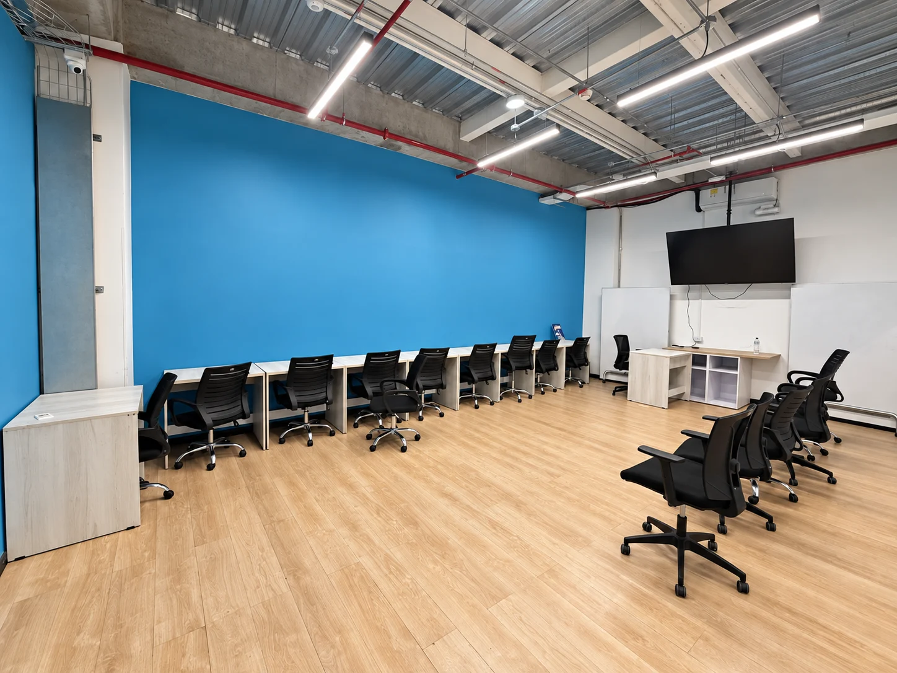

El campus, en orden
Espacios, recursos e incidencias en un mismo recorrido.

Fotografía aportada · Edición con IA
La arquitectura del producto
La identidad y los permisos se comprueban en el servidor.
Inicia sesión
Presenta la solicitud
Verifica token y rol
Guarda la operación
Supabase Auth identifica la sesión. La API consulta permisos y propietario.
Reglas de negocio
Las decisiones no dependen de lo que muestre el navegador.
Estado del espacio y cruces antes de confirmar.
La concurrencia se resuelve en la base de datos.
La auditoría se guarda junto con el cambio.
Incidencias y triaje
El reporte se guarda antes de solicitar el análisis.
Descripción y evidencia
Categoría, prioridad y área
El operador decide
Si el análisis falla, el reporte permanece guardado y puede reintentarse.
Siguiente fase · Arquitectura prevista
La ingesta, el índice y el chat todavía están pendientes.
EN PREPARACIÓN · No representa un servicio RAG implementado
Arquitectura prevista · En preparación
La procedencia y los permisos acompañan a cada fragmento.
Uso autorizado
Versión y permisos
Página, hoja o fila
Embeddings
Proveedor de embeddings por definir. Los documentos simulados se identificarán.
Arquitectura prevista · En preparación
El acceso se valida antes de recuperar contexto.
Sesión verificada
Fuentes autorizadas
Contexto relevante
Citas comprobables
Sin evidencia suficiente, se indica el límite. No se inventa una respuesta.
Un producto, responsabilidades claras
El equipo conserva la última palabra.